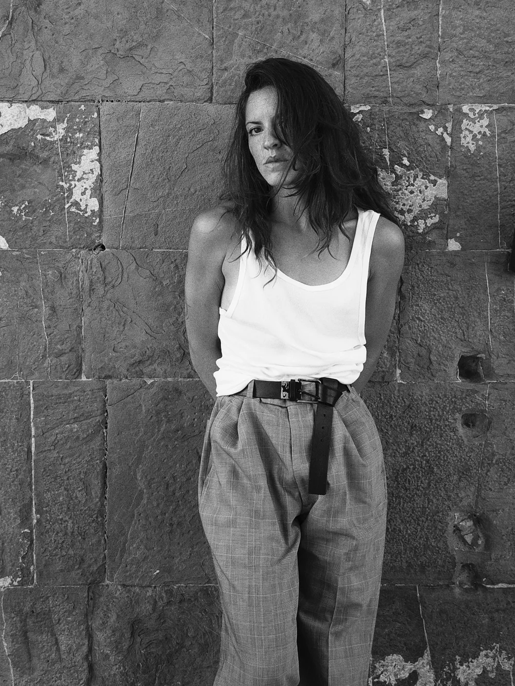
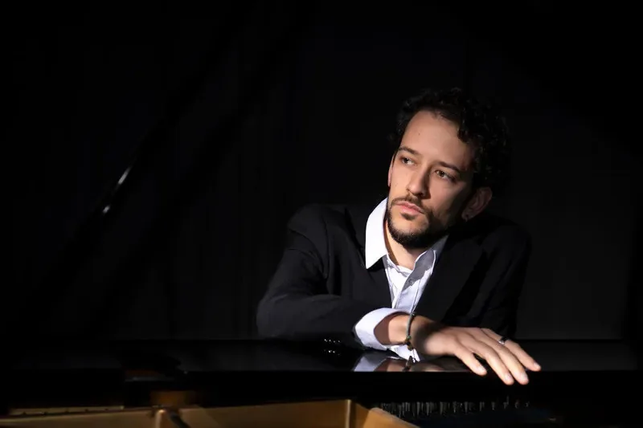

Danza contemporanea e teatro di figura
Eudemonìa
Ma cosa accade quando il nostro demone interiore si frappone tra noi e la possibilità di essere felici?
Danza contemporanea e teatro di figura
Ma cosa accade quando il nostro demone interiore si frappone tra noi e la possibilità di essere felici?
Eudaimonìa, dal greco εὐδαιμονία: da εὖ, «bene», e δαίμων, «demone; sorte». È un termine greco antico che si riferisce a una forma di felicità che va oltre il semplice piacere o la soddisfazione momentanea: una vita appagata e autentica, ottenuta attraverso la realizzazione del proprio potenziale e il perseguimento della virtù.
Ma cosa accade quando il nostro demone interiore si frappone tra noi e la possibilità di essere felici?
Eudemonìa è un viaggio fisico ed emotivo che esplora il corpo, l'identità, il doppio, il riflesso, la verità e la bugia. Uno spettacolo che fonde danza contemporanea e teatro di figura per raccontare una storia intima e universale.


Fotografie: Marina Carluccio e CAINO.
Il corpo della danzatrice e quello della marionetta si confondono, si inseguono, si sfidano, in una tensione continua tra dominio e sottomissione. Così scrive l'autrice nel suo diario: «È come se avessi due personalità… mi sento un burattino nelle sue mani».
La marionetta, costruita appositamente da Mariella Carbone, diventa strumento scenico e metafora terapeutica: può essere manipolata o manipolatrice, vittima o carnefice.
Eudemonìa diventa un atto di resilienza e di verità. Il racconto di una mente che si sdoppia, di un corpo che non si riconosce, di un'anima che cerca la propria voce.
«Si può fare pace con i propri demoni. Si può tornare a vivere.»
Uno spettacolo nato dalla collaborazione tra Compagnia Fabula Saltica e il collettivo IANUA, dedicato a Paola Bianchini.
Chiara Tosti, autrice e interprete. Danzatrice freelance, chinesiologa, danzamovimentoterapeuta (APID) e cofondatrice del collettivo IANUA. Si forma presso CODARTS nei Paesi Bassi e l'Agora Coaching Project di Reggio Emilia; laureata in Scienze Motorie, consegue un Master in Pedagogia della Mediazione Corporea e Danzamovimentoterapia. Dal 2018 collabora con Fabula Saltica; ha lavorato con il Teatro del Lemming e con Paolo Rosini. Nel novembre 2025 debutta come autrice e interprete con Eudemonìa.
Mariella Carbone, creazione marionetta. Architetto, arteterapeuta e pupazzara: si divide tra architettura, arteterapia e teatro di figura. Illustratrice e scenografa, crea maschere, marionette, bambole, figure e sculture per collezionisti, compagnie e festival nazionali e internazionali.
Nicola Elias Rigato, musiche. Pianista e compositore, fondatore del collettivo IANUA. Diplomato con lode e menzione d'onore, pubblica con Universal Edition; vincitore del Premio Internazionale Don Sante Montanaro, ha collaborato con RAI 5 e l'Orchestra Sinfonica di Sanremo.

